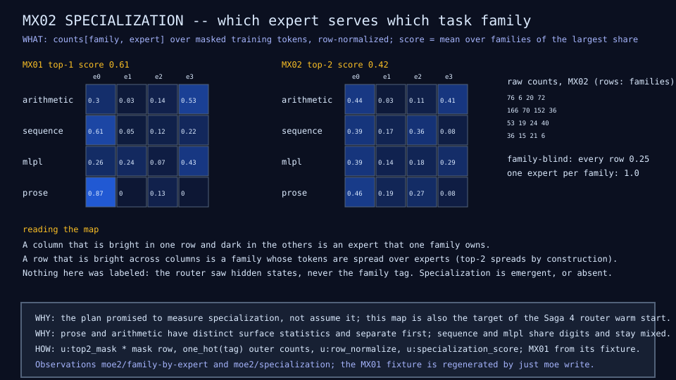

sw-ml-study / moe-microscope
A tiny MoE built from scratch in sw-MLPL, one mechanism at a time, with every router decision, expert load, and byte measured and recorded. Results from the first three sagas, plus an honest early answer about a trained "campus docent".
Why
FreeToken-style inference wants a model whose experts live on disk, whose hot experts sit in a cache, whose memorized patterns live in a lookup table, and whose depth comes from reusing one block. Each of those is a kind of sparsity, and each can be isolated at microscope scale.
| Sparsity | Avoid paying for | Mechanism |
|---|---|---|
| Parameter | many unique layers | recurrence |
| Compute | every expert on every token | top-k routing, sparse dispatch |
| Memory lookup | reconstructing common patterns in weights | Engram table |
| Residency | the whole expert bank in fast memory | expert cache |
Large models hide these parts. A model of a few thousand parameters can show them, if every intermediate value is recorded and drawn.
What
Rule of the repository: prefer a shipped feature; build from scratch only when watching it work is the lesson, then show both forms with a parity check.
Results
Stored capacity
1.86x
the dense model's parameters, for 1.02x the active parameters per token, at the same validation loss (3.76 vs 3.79).
Specialization
0.61
mean largest family share per expert under top-1, against 0.25 if routing ignored the task. The router never saw a family label.
Sparse dispatch
4x
fewer expert row evaluations (13,440 to 3,360) with outputs equal to the bit. And slower in the interpreter: dispatch overhead beats tiny matmuls.
| Run | Params | Active / token | Val loss | Note |
|---|---|---|---|---|
| DN01 dense | 3,812 | 2,996 | 3.79 | baseline |
| MX01 top-1 of 4 | 7,096 | 3,064 | 3.76 | specialization 0.61 |
| MX02 top-2 of 4 | 7,096 | 4,136 | 3.92 | fits better, generalizes differently |
| LD01 16 rank-4 deltas | 5,060 | 2,324 | 3.37 | half the bytes of 4 full experts |
Results
| Training examples | Dense val loss | MoE val loss | Held-out prose exact match |
|---|---|---|---|
| 120, 200 epochs | 3.48 | 3.49 | 0.67 |
| 120, 400 epochs | 3.89 | 4.17 | 0.67 |
| 480, 200 epochs | 1.66 | 1.42 | 1.00 |
| 960, 200 epochs | 1.11 | 1.22 | 1.00 / 0.75 |
Doubling epochs at 120 examples makes both models worse. Eightfold data cuts validation loss by two thirds. The small mixture wins at 480 examples and loses at 960: at this scale neither architecture dominates, and the difference only shows once there is enough data.
Every claim cites a results row, a diagram, or a finding, and states its limitation. One seed per point; interpreter timings on one laptop.
How

Router logits, softmax probabilities, a one-hot mask, a gate that keeps the chosen probability (so the router gets a gradient), per-expert loads, the balance term, then dispatch: gather each expert's rows, run it once, scatter back. The live demo steps through exactly these recorded values.
An honest interim result
Second training area: a "campus docent" that reads a visitor's question and predicts only an intent and a destination on a museum-style campus site. The catalog supplies every word it says, so it cannot invent an exhibit.
| Held-out rows | Dense docent (trained) | Keyword matcher (no model) |
|---|---|---|
| Destination accuracy | 0.925 | 0.954 |
| Intent accuracy | 0.938 | 0.780 |
| Paraphrases (no alias verbatim) | 0.296 | 0.630 |
| Off-topic rejected | 0.30 | 1.00 |
Today the trained docent does not add value over a deterministic matcher. The bar is written down: beat the matcher by 20 points on paraphrases or the site keeps the matcher. Word vectors from the campus's own text and the routed experts are next.
Conclusions
Next: word vectors and routed experts for the docent, then recurrence (HRM/TRM style), the Engram table, distillation, quantization, an expert cache, and CPU/GPU heterogeneous execution.
Live demo sw-ml-study.github.io/moe-microscope
Code and results github.com/sw-ml-study/moe-microscope Wiki github.com/sw-ml-study/moe-microscope/wiki
Language github.com/sw-ml-study/sw-mlpl Blog blog.softwarewrighter.com